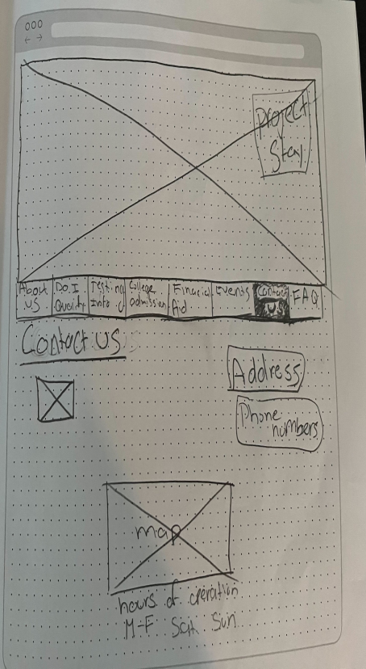
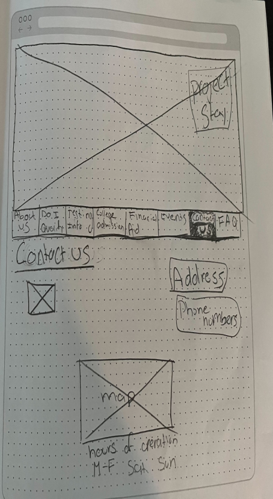

Research and Analysis

Thank you for taking the time to see my case study. You will see I have broken it down by sections with each section having a title. Please enjoy!
If you would like to see my other work, please click down below.
Project overview: We were given 3 weeks to complete the project from research all the way to testing and prototyping and presenting.
Project Stay was designed to assist individuals with securing a post secondary education. We have observed the website has misleading information and lacks clear navigation which is causing individuals to not utilize the Project Stay resources. How might we improve the design navigation and content layout so that users can easily determine the onboarding process and follow through with services.
Goal 1: Successfully navigate and find the documents needed to apply to the ProjectStay benefits.
Goal 2: Successfully navigate and find FAFSA information.
Goal 3: Successfully navigate and find the hours of operation for the organization.

This was created by thinking of the path that a user would take when they were on the website. The original website made the user have to go back and forth between the tabs instead of leading the user through all the tabs in the correct order. This affected the design in general to make it easier to navigate the website and make the flow that the user would take more natural and take them in the correct process that they would need in order to get the information in the correct way.

 



Here is a brief look at the color desing that was used for the project.
Take a more in depth look at the style and colors that were used for the project.
Style Tile


Here is a brief look at the final protoype that was presented.
The experience testing was really great. It was great being able to run tests and continue to get more practice on how to ask the questions, what to look for and how to interact with the client during the interview. The more tests what we were ran, the more comfortable I became and the easier it was to run the tests.
At first we did user interviews but after talking, we realized that interviews were not the best way to go and we had to completely scrap that and begin our research again by doing usability tests. Learned to make sure to pick the best research method from the beginning so you don't have to backtrack and do double the work